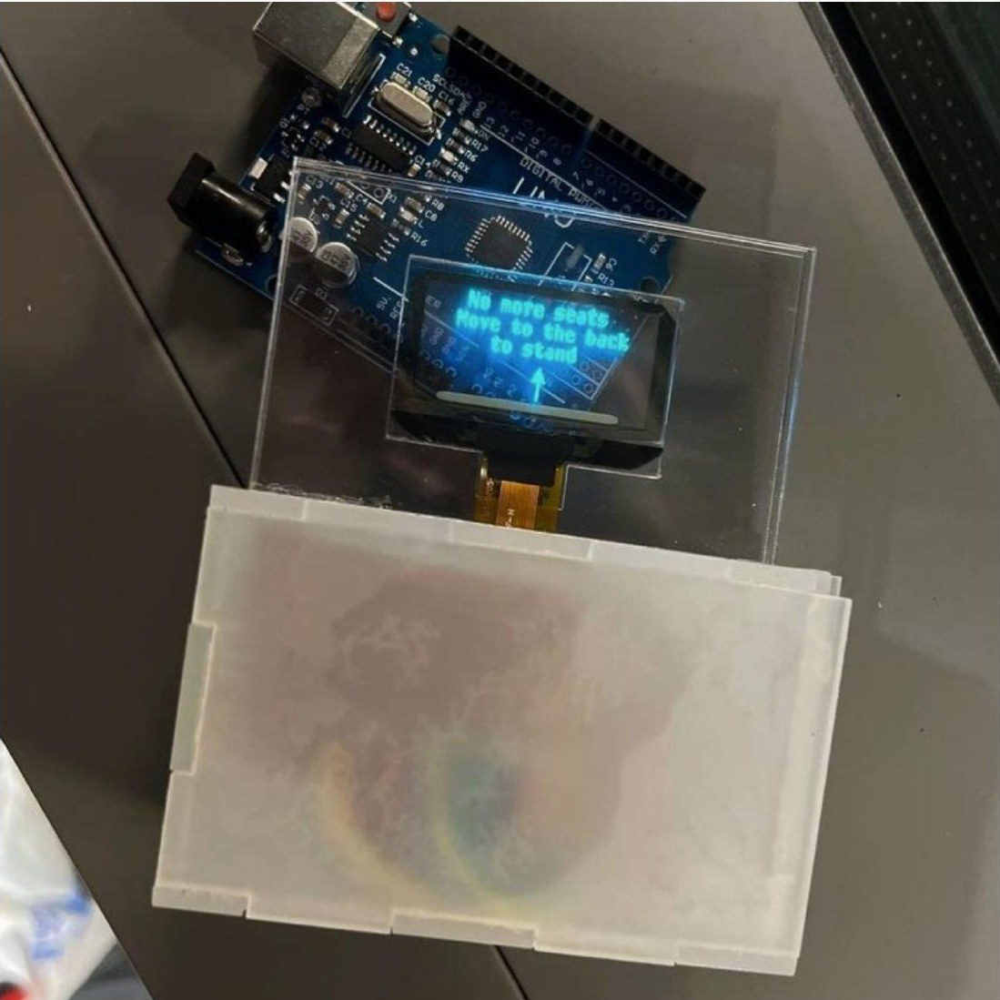
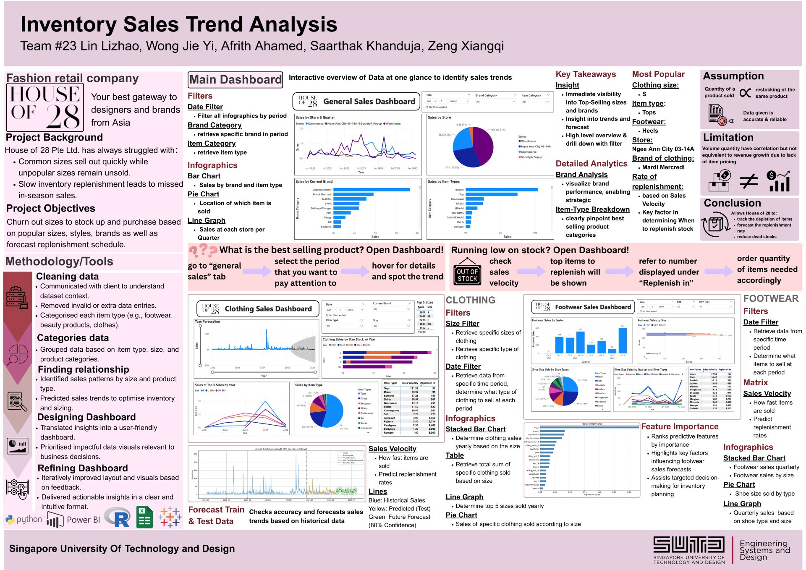

I'm Afrith, a systems engineering student who builds dashboards, simulation models and working prototypes, and who's happiest when raw, inconsistent data finally becomes reliable enough to make decisions with.
I started out in electrical and electronic engineering at Singapore Polytechnic, then served my National Service as a police officer at the Airport Police Division, where I was promoted to Sergeant. Now at SUTD, I study how complex systems behave and how to make them run better, through optimisation, simulation, statistics and supply chain design.
During my internship at Sembcorp, I found that the part of the job I enjoyed most was cleaning and structuring data, because good dashboards and automations only work when the data underneath them is solid. That's the thread running through the projects below.

A bus card with a see-through display whose AR arrow nudges commuters toward empty seats at the back of the bus. I built the firmware that keeps the arrow pointing the right way using live gyroscope input.
Read the case study →
I built the interactive Power BI dashboards that show a multi-brand retailer which sizes, styles and brands sell fastest, and when to restock them before they run out.
Read the case study →A simulator that stress-tests how berth scheduling rules hold up under storms, congestion and berth outages, built on a year of dry-bulk arrivals supplied by Cargill. I built and cross-validated the first-come-first-served baseline in both Excel and SimPy.
Read the case study →A desktop app for planning and logging my day. It supports recurring activities, a date picker, day-by-day navigation and a manager for reusable templates. I refactored it from one large script into a clean four-module structure (UI, dialogs, data, entry point) to keep it maintainable.
B.Eng. Engineering Systems and Design · Sep 2023 – Apr 2027 (expected)
Relevant modules: Simulation Modeling & Analysis, Optimization, Data & Business Analytics, The Analytics Edge, Probability & Statistics, Supply Chain Management, Manufacturing & Service Operations, Game Theory
Diploma in Electrical & Electronic Engineering · 2018 – 2021 · cGPA 3.62
Also: FACT Programme, Designing Energy Systems (Ratchaburi, Thailand, Jan 2025), prototyping renewable energy solutions with Thai university students.
I'm looking for graduate roles starting in 2027. If you think I'd be a good fit for your team, I'd love to hear from you.